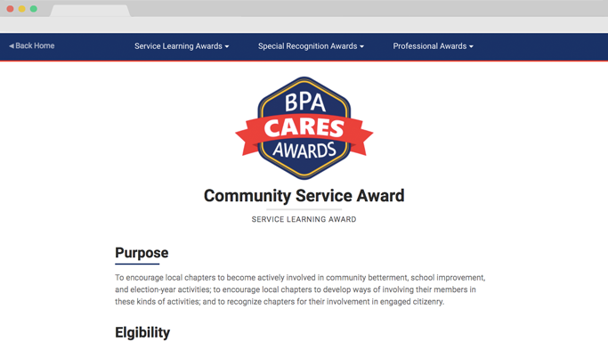
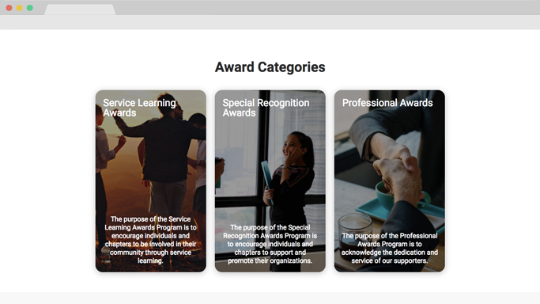

What is BPA Cares?
I helped create this website for the Business Professionals of America Web Design Team competition with teammates Bhargav Yadavalli, Robbie McCracken, and Rahul Gudivada. I mostly worked on the UI/UX along with the Graphics and general front end development for the application.
The competition entailed creating a website for a program called BPA Cares, showcasing the different special awards given out by the BPA committee for those who show excellence in service for BPA.
Building the BPA Cares Site
The theme of this site was to take a flat design approach, keeping a very minimalistic look for the site, making sure that information was very accessible and obvious, all while making sure the user was not flooded with content.
We wanted the main focus to be the content, so we kept the page minimal which allowed the text to be the element that stood out.
Navigation
The navigation of the site was one of the more difficult components of the site, with the challenge being making sure that you can access all pages on the website no matter where you are.
The solution was to create a dropdown menu for the three different award categories, listing all of the possible awards in a very user friendly manner.
The dropdown menu took a while to develop due to the intricacy of getting it to work on all devices. The menu needed to work on phones, laptops, tablets, and this was no easy feat. It required a lot of formatting, especially on mobile devices to keep the navigation experience as seamless as possible.
Creating the BPA Cares Logo
We were tasked with creating a logo for the site to almost give it its own identity. We wanted to keep the navy blue and red that BPA used on their main site, while also giving it a vibe of achievement, so we created a badge. It had a navy blue body, a red ribbon, and gold accents.
We used very bold sans serif text for the text on the logo, hoping to give it a very poppy look when you look at it.
The Layout
We went for a card design throughout the site, with the awards category and cards and the grid where all of the awards are listed.
Behind the card, we added images with a shader over the photo, allowing the text to pop while still allowing the pictures to shine.
We felt the card layout would work best because it allowed us to easily display the awards without occupying too much space or displaying the information in a boring manner.
Displaying All of the Awards
We created a grid system for displaying all of the awards on the homepage for easy browsing. We also included a search bar, allowing the user to search for awards by keyword. It was difficult to implement the real time updating search function, but with the help of some JavaScript event handlers, we were able to deliver a search bar that instantly updates the grid as the user types in their desired keyword(s).
The grid system allowed for easy viewing of the different awards by categories, with the different categories marked by one of three colors, blue, red, and gold.
Webpage Animations
We used the Animate on Scroll (AOS) JavaScript animation library to help create some of the animations you see on the site. I used the fade up animation for most of the elements on the site, having the elements fade into view as you scroll down. Using JavaScript functions, I staggered the delay for the animations on the grid, giving it a more fluid experience as you scroll into the grid section to give you a feel of the flow of the order of the content.
We kept all of the animations to 0.4 seconds which is the ideal time frame, not too fast, not too slow.
Conclusion
This site was definitely a challenge, the navigation and the searchable grid proving to be the most problematic parts of the site. I learned a lot about templating since a lot of the award pages were very similar, and this was my first site with over 20 different pages. Overall it taught me about keeping stylesheets very nice, and reusing CSS stylesheets.